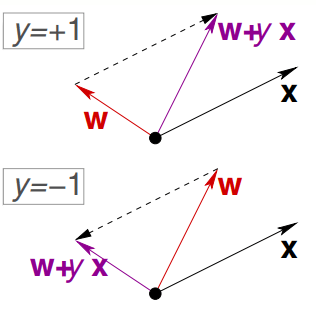

感知机（Perceptron）是一个二分类的线性模型。它于1957年被提出，是支持向量机和神经网络的基础。
感知机
感知机（Perceptron）是一个二分类的线性模型。它于1957年被提出，是支持向量机和神经网络的基础。
感知机模型
模型输入数据为：\(\{({\bf x_1}, y_1),({\bf x_2}, y_2),\cdots,({\bf x_n}, y_n) \}\)，其中\(x_i\)为样本 i 的特征向量，\(y_i\in \{+1,-1\}\)为类别标签。
输入到输出空间的映射为： \[ f(x) = {\rm sign}({\bf w^Tx}+b) \] 上述的sign为符号函数，其值如下： \[ {\rm sign}(t) = \begin{cases} +1 , & t\ge 0 \\ -1, & t\lt 0 \end{cases} \]
感知机的几何解释
感知机的目标是求一个超平面使得特征空间划分为两部分，从而实现分类的效果。
线性方程 \({\bf w^T x}+b = 0\)，w为超平面的法向量，b是超平面的截距。
w为啥是法向量？证明如下：
设\({\bf x_0,x_1}\)是平面上的任意两个点，则显然有： \[ \begin{align} {\bf w^T x_0} + b = 0\\ {\bf w^T x_1} + b = 0\\ \end{align} \] 两式相减得： \[ \begin{align} {\bf w^T (x_0 - x_1)} = 0\\ \end{align} \] 而\(\bf x_0 - x_1\)是平面上的向量，而\(\bf x_0 - x_1\)与w内积为0，因此，w就是法向量（垂直于平面内所有向量）。
感知机的分类示意图如下：
学习策略
那么，如何训练出感知机呢？
我们需要有一个损失函数，这样我们才能不断的优化它，最后达到一个较为理想的值。
既然是分类问题，一个自然的选择是误分类点的总数（即0-1损失函数） \[ l_{0-1}= \begin{cases} 0&f({\bf x_i}) = y_i\\ 1& f({\bf x_i}) \ne y_i \end{cases} \] 但是这个损失函数不是参数w,b的连续可导函数，不容易进行优化。
因此，感知机采用的是误分类点到超平面S的总距离。
设点\(\bf x_0\)到超平面 \({\bf w^T x_0}+b = 0\)的距离为d。\(\bf x_1\)为平面上的任意一点，则\(|\!|{\bf x_0} - {\bf x_1}|\!|\)投影到\(\bf w\)的距离为： \[ \begin{align} \rm proj_w({\bf x_0-x_1}) &=|\!|{\bf x_0-x_1}|\!|\cdot |\cos({\bf w,x_0-x_1})| \\&=|\!|{\bf x_0-x_1}|\!|\frac{|{\bf w^T(\bf x_0 - x_1)}|}{ {|\!|{\bf w}|\!|\ |\!|\bf x_0-x_1|\!|} } \\&=\frac{|{\bf w^T(\bf x_0 - x_1)}|}{ {|\!|{\bf w}|\!|} } \\&=\frac{|{\bf w^T\bf x_0 -w^Tx_1}|}{ {|\!|{\bf w}|\!|} } \\&=\frac{|{\bf w^T\bf x_0} +b|}{ {|\!|{\bf w}|\!|} } \tag{2-1} \end{align} \] 式2-1即为点\({\bf x_0}\)到超平面S的距离。
对于分类错误的样本\(({\bf x_i}, y_i)\)有： \[ y_i({\bf w^T x_i}+ b) \lt 0 \] 因此，误分类点到平面的距离为： \[ -\frac{1}{|\!|{\bf w}|\!|}y_i({\bf w^T x_i}+ b） \] 考虑所有的分类错误的点集合M，则所有误分类点到超平面S的总距离： \[ -\frac{1}{|\!|{\bf w}|\!|}\sum_{x_i\in M}y_i({\bf w^T x_i} + b） \] 不考虑\(\frac{1}{||{\bf w}||}\)，就得到感知机的损失函数： \[ \begin{align*} L(w, b) &= -\sum_{x_i\in M}y_i({\bf w^T x_i}+ b), i = 1,2...,n\\ &= \sum_{i=1}^n\max(0, -y_i({\bf w^T x_i}+ b)) \end{align*}\tag{2-2} \] 损失函数\(L({\bf w}, b)\) 是非负的，若没有误分类点，则\(L({\bf w}, b)=0\)
PS: 为什么能不考虑\(\frac{1}{||{\bf w}||}\)呢？李航老师将\(y_i({\bf w^T x_i} + b)\)称为函数间隔，而称\(\frac{1}{||{\bf w}||}y_i({\bf w^T x_i} + b)\)为几何间隔。感知机省略了\(\frac{1}{||{\bf w}||}\)相当于是最小化函数间隔。后面会讲到SVM则是实实在在的几何间隔。几何间隔反应了点到超平面的垂直距离，而函数间隔则可以表示正确性以及分错的置信度。SVM想要鲁棒性(robust)强，因此采用最大化几何间隔。而感知机只想把所有的点都分对，只需要函数间隔即可。
梯度下降求解
由于L(w, b) 是w,b的连续可导函数，我们可以用随机梯度下降法进行求解。 \[ \begin{align*} \frac{\partial L({\bf w}, b)}{\partial {\bf w} } &= -\sum_{x_i\in M}y_i {\bf x_i}\\ \frac{\partial L({\bf w}, b)}{\partial b} &= -\sum_{x_i\in M}y_i \end{align*} \] 因此，感知机学习算法（Perceptron Learning Algorithm, PLA）如下(随机梯度下降)：
给定学习率\(\eta\)，随机选取初值w, b
选取分类错误的数据 \({\bf x_i}, y_i\)按下面的式子更新，直到没有错误为止
\[ \begin{aligned} {\bf w} \leftarrow& {\bf w} + \eta y_i{\bf x_i}\\ b \leftarrow& b + \eta y_i \end{aligned}\tag{2-3} \]
感知机选取不同的初值或选取不同的分类点，解可能不同。为了得到唯一的超平面，需要对分离超平面增加约束条件。（其实就是SVM的想法）
当数据集 线性可分 时（即存在一个超平面，能将数据集中正例负例正确的划分到超平面两侧），可以证明，感知机一定会收敛（即没有错误），在本小节最后给出相应的证明。
当线性不可分的时候，往往设定迭代次数。
一种几何解释
在台大的林轩田《机器学习基石》课程中，提到了这种修正方法：
对于分类错误的样本，有（把b放入了w，对应的x为1就得到）： \[ {\rm sign}({\bf w^T x_i}) \not =y_{i} \]
有两种情况：
y是+1，但是模型判断出来是负值。也就是说此时w与x之间的角度太大，因此需要把w往靠近x的方向旋转使它们的角度变小。可以通过\({\bf w} \leftarrow {\bf w} + y_i{\bf x_i}\)达到这个目的
y是-1，但是模型判断出来是正值。也就是说此时w与x之间的角度太小，因此需要把w往远离x的方向旋转使它们的角度变大。考虑到负号，其实也可以可以通过\({\bf w} \leftarrow {\bf w} + y_i{\bf x_i}\)达到这个目的

感知机收敛证明
在收敛性证明中，我们感知机也使用\(f({\bf x}) = {\rm sign}({\bf w^T x_i})\)的形式（为了方便描述，本文余下部分也用这种形式）。
设训练集\(\{({\bf x_1}, y_1),({\bf x_2}, y_2),\cdots,({\bf x_n}, y_n) \}\)是线性可分的，其中\(\ y_i\in \{+1,-1\}\)，则： 1. 存在满足\(|\!|w_{opt}|\!|= 1\)的超平面\(\bf w_{opt}^Tx\)将数据集完全正确分开，且存在\(\gamma \gt 0\), 对于所有的\(i =1,2, \cdots,n\)，有\(y_i({\bf w_{opt}^Tx_i }) \ge \gamma\) 2. \(R = \max_{1\le i \le n} |\!|x_i|\!|\), 则感知机在训练数据集上的误分类次数满足不等式\(k \le (\frac{R}{\gamma})^2\)
对于第1点，由于训练集是线性可分的，根据线性可分的定义，必有超平面可将数据集正确分开。因此有\(y_i{\bf w_{opt}^Tx}\gt 0\)，所以存在\(\gamma =\min_i \{y_i({\bf w_{opt}^Tx_i })\}>0\)，使得\(y_i{\bf w_{opt}^Tx}\ge \gamma\)
接下来证明第2点。 \[ \begin{align*} {\bf w_{k}^Tw_{opt} } &=({\bf w_{k-1} } +\eta y_i{\bf x_i})^T{\bf w_{opt} } \\ &= {\bf w_{k-1}^Tw_{opt} } +\eta y_i{\bf w_{opt}^Tx_i}\\ &\ge {\bf w_{k-1}^Tw_{opt} } + \eta\gamma\\ &\ge {\bf w_{k-2}^Tw_{opt} } +2\eta\gamma\\ &\ge k\eta\gamma \hspace{10ex}\tag{2-4} \end{align*} \]
式2-4最后是假设初始\(w_0\)是0向量。
又因为： \[ \begin{align*} |\!|{\bf w_{k}^T}|\!|^2 &= |\!| {\bf w_{k-1} } +\eta y_i{\bf x_i}|\!|^2\\ &= |\!|{\bf w_{k-1} }|\!|^2+ |\!|\eta y_i{\bf x_i}|\!|^2 +{2\eta y_i {\bf w_{k-1}^Tx_i} }\\ & \le |\!|{\bf w_{k-1} }|\!|^2+ \eta^2|\!|{\bf x_i}|\!|^2 \hspace{5ex} y_i {\bf w_{k-1}^Tx_i} \le 0 \ and \ y_i^2 = 1\\ & \le k\eta^2|\!|{\bf x_i}|\!|^2\\ & \le k\eta^2 R^2 \hspace{17ex} R = \max_{1\le i \le n} |\!|x_i|\!| \tag{2-5} \end{align*} \] 又因为 \[ \underbrace{k\eta\gamma \le {\bf w_{k}^Tw_{opt} }}_{式2-4} \le |\!|{\bf w_{k}^T}|\!| \underbrace{|\!|{\bf w_{opt} }|\!|}_{1}=|\!|{\bf w_{k}^T}|\!| \le \sqrt{k\eta^2R^2} \tag{2-6} \] 因此有 \[ (k\eta\gamma)^2 \le k\eta^2R^2 \Rightarrow k \le \left(\frac{R}{\gamma}\right)^2 \tag{2-7} \] 式2-7说明，感知机在在线性可分的数据集中训练，误分类次数k是有迭代上限的，经过有限次搜索可以找到将训练数据完全正确分开的超平面。
感知机的一些变形
前面提到了感知机的学习算法PLA，其可以容易的扩展到在线学习、批量学习、以及核函数形式。
在线学习 Online learning
Online learning refers to the learning mode in which the model update is performed each time a single observation is received
在线学习即使用新观测到一条数据来更新模型。
回顾一下PLA，PLA是遍历数据，选一条分错的数据按2-3式进行更新。其实就是随机梯度下降法。这很容易扩展到在线学习中。给定一条新的数据，只要数据分错，那么继续按2-3式更新。
给定学习率\(\eta\)，随机选取初值w
给定数据\(({\bf x_i},y_i)\)，若\(y_i \ne sign({\bf w^Tx_i})\)按下面的式子更新
\[ {\bf w} \leftarrow {\bf w} + \eta y_i{\bf x_i} \]
批量学习 Batch learning
Batch learning performs model update after observing the whole training set.
批量学习一次使用整个数据集进行更新。
给定完整的数据集\(\{({\bf x_1}, y_1),({\bf x_2}, y_2),\cdots,({\bf x_n}, y_n) \}\)，学习率\(\eta\)，随机选取初值w do
\(\Delta\leftarrow (0,0,\cdots,0)\) for i = 1 to N do \(u_i \leftarrow {\bf w^T x_i}\) \(\text{if } y_iu_i\le0\){ \(\Delta \leftarrow\Delta+ (- y_i{\bf x_i})\) }
\(\Delta \leftarrow \Delta / n\) \({\bf w} \leftarrow {\bf w} - \eta\Delta\)
until \(|\Delta| \lt \epsilon\)
核化感知机
如果你不知道核函数是什么，可以先看完我的SVM系列（尤其是深入理解SVM(二) – 核函数和软边距）后再来看该内容。
为了使用核方法，首先要将\(\bf w\)用\(\bf x_i\)线性表示。根据假设其初值为0，根据PLA算法，可以看出 \[ {\bf w} = \sum_{i=1}^n\alpha_iy_i{\bf x_i} \] 其中，\(\alpha_i= n_i\eta\)表示样本\(x_i\)被误分类的次数\(n_i\)乘以\(\eta\)（每误分一次就要使用\({\bf w} \leftarrow {\bf w} + \eta y_i{\bf x_i}\)更新一次）
因此，感知机可以写为 \[ \begin{align*} f({\bf x}) &= \rm sign({\bf w^Tx})\\ &= \rm sign(\sum_{i=1}^n\alpha_i{\bf y_i{\bf x_i}^Tx})\\ & = \rm sign(\sum_{i=1}^n\alpha_iK({\bf x_i, x})) \end{align*} \] 其学习方式为:
给定学习率\(\eta\)，\(\alpha_i = 0\)
对于每个训练数据\(({\bf x_j},y_j)\)，若\(y_i \ne sign(\sum_{i=1}^n\alpha_iK({\bf x_i, x_j}))\) 按下面的式子更新，直到达到迭代次数或满足终止条件： \[ \alpha_i \leftarrow \alpha_i + \eta \]
小结
感知机寻找超平面\({\bf w^T x}+b = 0\) 来划分数据，采用\(\rm sign({\bf w^T x}+b)\)来判别正负类
感知机学习的目标函数定义是 误分类点到超平面S的总函数距离，即 \[ \begin{align*} L(w, b) &= -\sum_{x_i\in M}y_i({\bf w^T x_i}+ b）, i = 1,2...,n\\ &= \sum_{i=1}^n\max(0, -y_i({\bf w^T x_i}+ b)) \end{align*} \]
参考资料
- 《统计学习方法》 - 李航
- 机器学习基石 - 林轩田
- Perceptron-CS534
- Convergence Proof for the Perceptron Algorithm
- Kernel_perceptron